מדריך למשתמש
כל מה שצריך לדעת כדי להתחיל לתרגל, ללוות ילד או לנהל כיתה. בחרו את התפקיד שלכם.
כניסה וחשבונות
לכל אחד יש חשבון משלו: תלמיד, הורה או מורה.
1מתחברים
מקלידים שם משתמש וסיסמה ולוחצים "יוצאים לדרך". האפליקציה פותחת את המסך שמתאים לתפקיד.
- כניסה ראשונה: אם קיבלתם סיסמה זמנית, תתבקשו לבחור סיסמה קבועה.
- מכשיר אחד בכל פעם: התחברות ממכשיר אחר מנתקת את הקודם.
- "שמור אותי מחובר": במחשב משותף כדאי לבטל את הסימון.
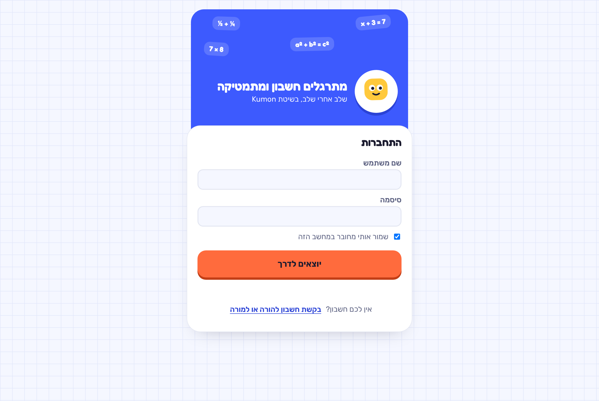
2אין לכם חשבון?
הורים ומורים לוחצים במסך ההתחברות על "בקשת חשבון להורה או למורה", ממלאים שם ודרך יצירת קשר, ושולחים. מנהל המערכת יוצר את החשבון וחוזר אליכם עם הפרטים.
חשבונות תלמידים נוצרים על ידי ההורה או המורה.
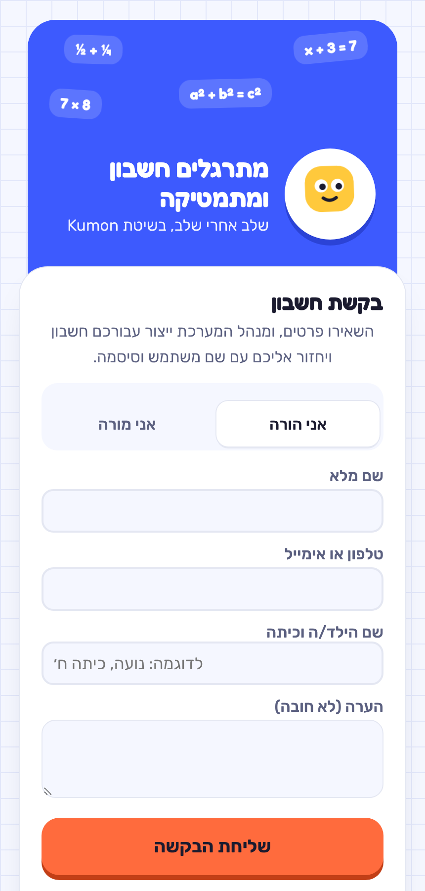
מדריך לתלמיד
כל יום מתחילים בכפתור הכתום הגדול.
1מסך הבית
- למעלה: הדמות עם מספר השלב, המטבעות, ימי הרצף והתגים שכבר השגתם.
- הכפתור הכתום: מתחיל או ממשיך את השיעור ופותח את התחנה הבאה במסע.
- כרטיס השיעורים: כמה שיעורים הושלמו מתוך כמה.
- המשימות של היום: שלוש משימות קטנות, וכל אחת מזכה במטבעות.
- אימון חכם: סבב מעורב מכל מה שלמדתם, עם דגש על מה שטעיתם בו.
כניסה ראשונה: שאלון קצר (בית ספר, כיתה ועד כמה אתם אוהבים מתמטיקה) ואחריו בדיקת רמה, כדי שהמסע יתחיל מהמקום הנכון.
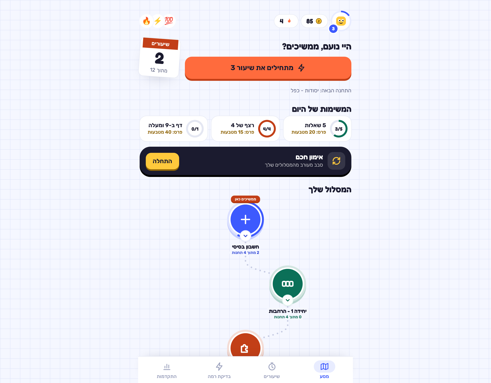
2המסע
המסע בנוי מיחידות, ובכל יחידה יש תחנות. לחיצה על יחידה פותחת את התחנות שלה. התגית "ממשיכים כאן" מסמנת את התחנה הבאה.
- תחנה עם ✓ הושלמה. הנקודות מתחת לכל תחנה מראות כמה שלבים כבר עברתם.
- בסוף המסע מחכה הבוס: סימולציית מבחן עם שעון.
- ההורה או המורה יכולים להחליט אילו נושאים יופיעו במסע.
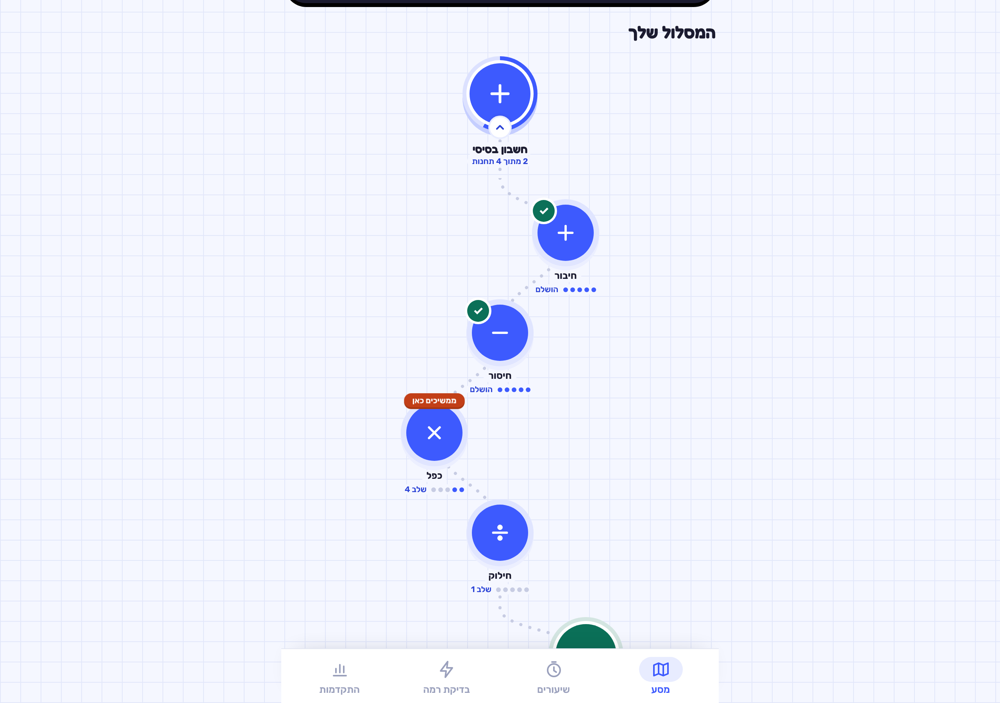
3שלבים בתחנה
בכל תחנה יש 10 שלבים. 9 תשובות נכונות מתוך 10 פותחות את השלב הבא. השלב שמחכה לכם מסומן ב"התור שלך".
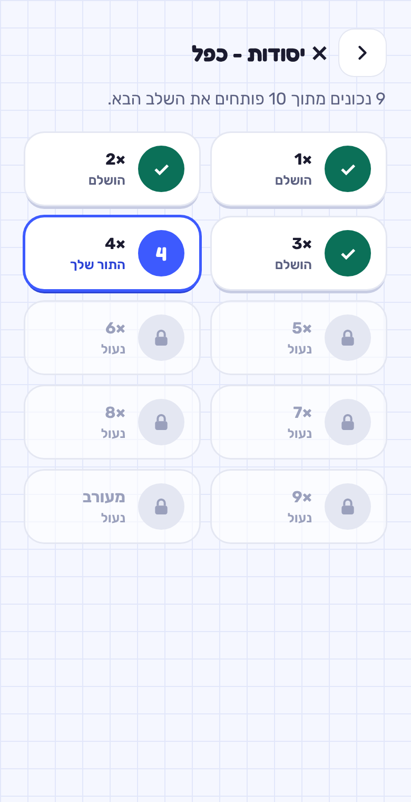
4פותרים שאלה
מקלידים תשובה במקלדת שעל המסך (או במקלדת של המחשב) ולוחצים "בדיקה".
- תשובה נכונה: מקבלים כוכבים. כמה תשובות נכונות ברצף מכפילות את הכוכבים.
- טעות ראשונה: מקבלים עוד ניסיון. אם זו טעות נפוצה, מופיע הסבר קצר של מה קרה. אחרת הרמז נפתח מעצמו.
- טעות שנייה: מופיעים התשובה הנכונה והפתרון צעד אחר צעד, כמו ב"לא יודע/ת".
מתחת לשאלה יש שלושה כלים: רמז, טיוטה ולא יודע/ת.
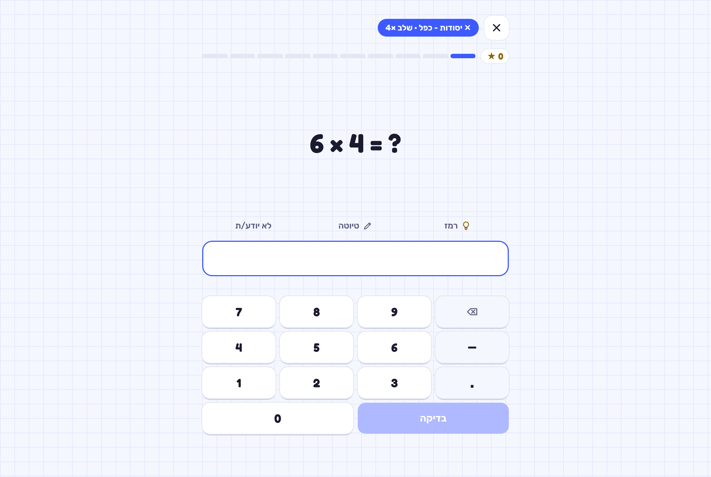
5רמז
הרמז מסביר את הדרך בלי לגלות את התשובה. יש עד שלושה רמזים, כל אחד קרוב יותר לפתרון.
- דרכי הסבר: בלשוניות שבראש הרמז בוחרים איך להסביר, במילים, מהחיים, בדוגמה או בציור. האפליקציה לומדת איזו דרך עוזרת לכם, מסמנת אותה ב"עובד לך" ומציעה אותה ראשונה.
- "תסבירו אחרת": עובר לדרך ההסבר הבאה.
- בדיקה קטנה: שאלה קצרה שבודקת שהרמז הובן. עונים עליה ורק אז ממשיכים.
- "הבנתי, חוזרים לשאלה": הרמז מתכווץ לפס קטן מעל השאלה, ואפשר לפתוח אותו שוב.
- "עוד רמז": עובר לרמז הבא. אחרי הרמז השלישי מופיע "שיעור של דקה", הסבר קצר של הנושא כולו.
שאלה שנפתרה רק אחרי הרמז השלישי או אחרי שיעור של דקה תחזור מאוחר יותר עם מספרים אחרים, לתרגול נוסף.
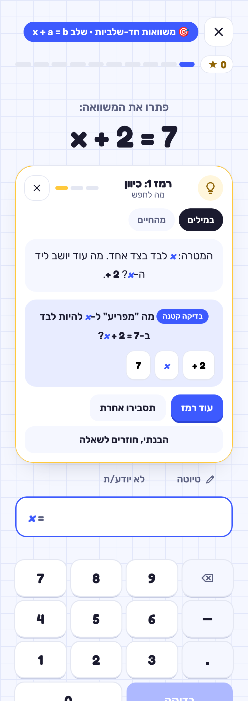
6טיוטה
הכפתור "טיוטה" פותח מקום עבודה ליד השאלה, עם שלוש לשוניות. השאלה מופיעה בראש הטיוטה, ומה שכתבתם נשמר כל עוד אתם באותה שאלה. במחשב הטיוטה נפתחת בצד, כך שהשאלה נשארת גלויה.
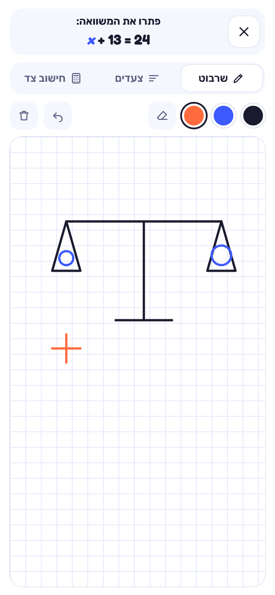
כותבים ומציירים באצבע או בעכבר. בוחרים צבע (שחור, כחול או כתום), מוחקים חלק במחק, מבטלים את הקו האחרון או מנקים הכול.
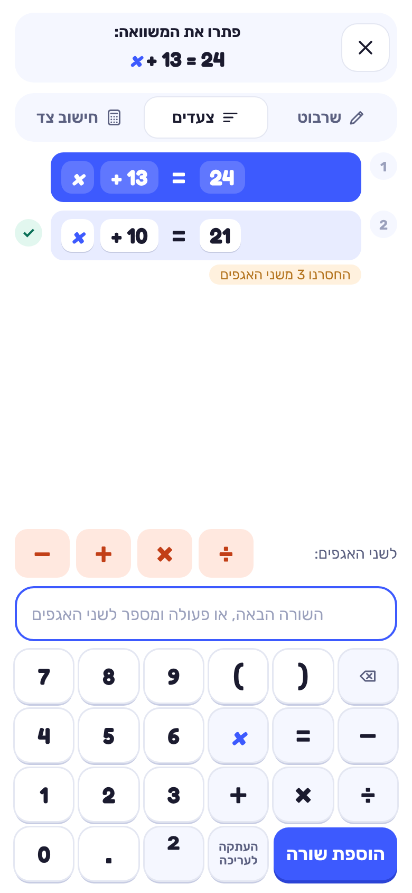
פותרים משוואה שורה אחרי שורה. השורה הראשונה היא השאלה. אפשר להקליד את השורה הבאה, או לבחור פעולה ומספר ב"לשני האגפים", והשורה החדשה נכתבת לבד. לחיצה על איבר מאפשרת להעביר אותו לאגף השני. ✓ ליד שורה אומר שהיא נכונה. כשמגיעים לתשובה, כפתור שולח אותה לשאלה.
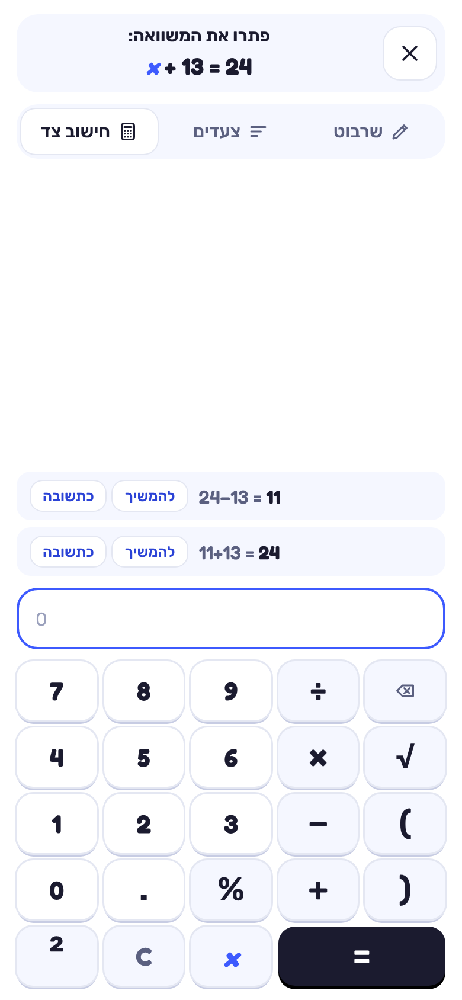
מחשבון לחישובי ביניים, עם סוגריים, שורש, אחוזים וחזקה. כל חישוב נשמר ברשימה: "להמשיך" ממשיך ממנו את החישוב הבא, ו"כתשובה" מעביר את התוצאה לתשובה. המקש x עובר ללשונית צעדים.
7לא יודע/ת
כשלא יודעים איך להתחיל, לוחצים "לא יודע/ת". אין על זה עונש, וזה עדיף על ניחוש.
- נפתח חלון עם התשובה הנכונה.
- מתחתיה הפתרון צעד אחר צעד. לוחצים "הצעד הבא" כדי לחשוף כל צעד בקצב שלכם.
- לוחצים "להמשיך" ועוברים לשאלה הבאה.
השאלה נספרת כטעות, כך שהיא לא מקבלת כוכבים ולא נספרת ל-9 מתוך 10. היא נכנסת לחזרה החכמה וחוזרת בהמשך עם מספרים חדשים, וגם באימון החכם. ההורה והמורה רואים בדשבורד כמה פעמים נעזרתם.
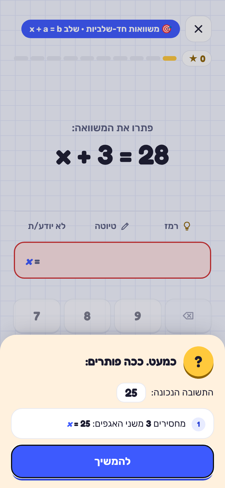
8שיעורים
שיעור הוא זמן תרגול נטו שההורה קבע, למשל 60 דקות. השעון סופר רק כשאתם פותרים, ונעצר אחרי דקה בלי פעילות. כל שיעור שמושלם חושף חלק מתמונת הפאזל.
שיעור שההורה או המורה הקפיאו מופיע באפור עם הכיתוב "מוקפא".
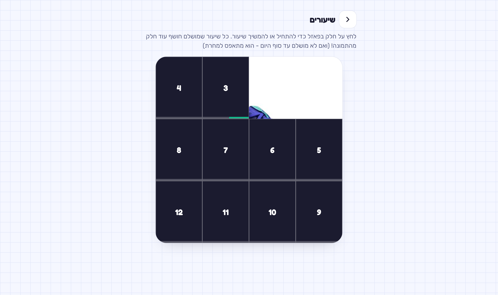
מדריך להורה
כרטיס לכל ילד, עם מה שקרה ב-7 הימים האחרונים.
1הילדים שלי
- נקודה ירוקה ליד השם: הילד מחובר עכשיו.
- רצועת 7 ימים: כל יום שבו תרגל צבוע בירוק, עם מספר הדקות.
- מספרים: דקות, דפים, אחוז הצלחה וימי רצף.
- הערה: מה שדורש תשומת לב, למשל "לא תרגל 5 ימים" או נושא לחיזוק.
- "לדשבורד המלא": גרפים, הצלחה לפי מסלול, בדיקת רמה ותרגולים אחרונים.
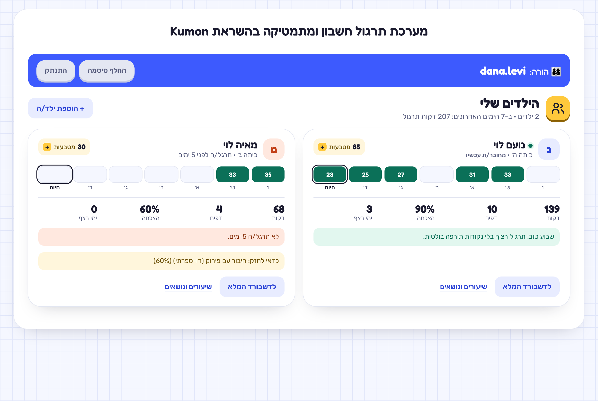
2הוספת ילד
- לוחצים "+ הוספת ילד/ה".
- ממלאים שם מלא, שם משתמש וסיסמה זמנית (לפחות 6 תווים).
- לא חובה: כיתה, בית ספר ומורה. אחרי בחירת בית ספר מופיעים רק המורים שלו.
- לוחצים "צור תלמיד" ומעבירים לילד את פרטי הכניסה.
אם בחרתם מורה, הילד מופיע מיד גם במסך של המורה.
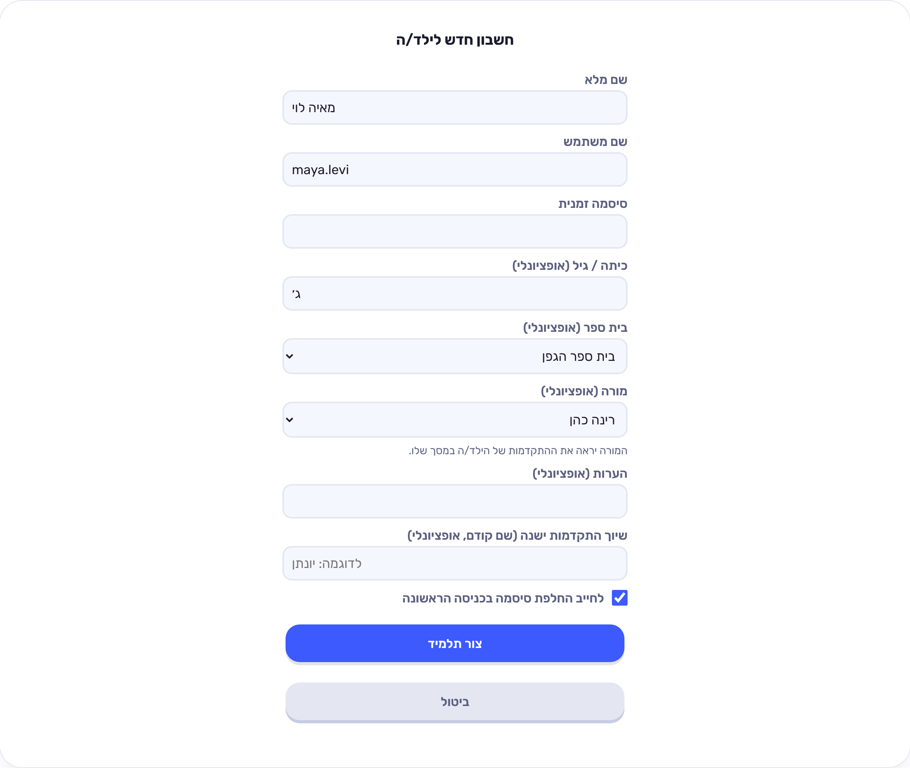
3שיעורים ונושאים
פותחים מ"שיעורים ונושאים" בכרטיס הילד או בדשבורד. השינוי חל אחרי "שמירה", מיד, גם אם הילד מחובר.
| פעולה | מה קורה אצל הילד |
|---|---|
| הקפאה | השיעור באפור ואי אפשר להתחיל אותו |
| ביטול | השיעור נעלם. אפשר לשחזר, כולל הדקות שנצברו |
| הקפאת הכול / ביטול הכול | חל על כל השיעורים שלא הושלמו, וכרטיס השיעורים נעלם |
| + שיעור חדש | שיעור נוסף בסוף, ההתקדמות נשמרת |
| נושאים במסע | נושא מוסתר לא מופיע במפה, ההתקדמות בו נשמרת |
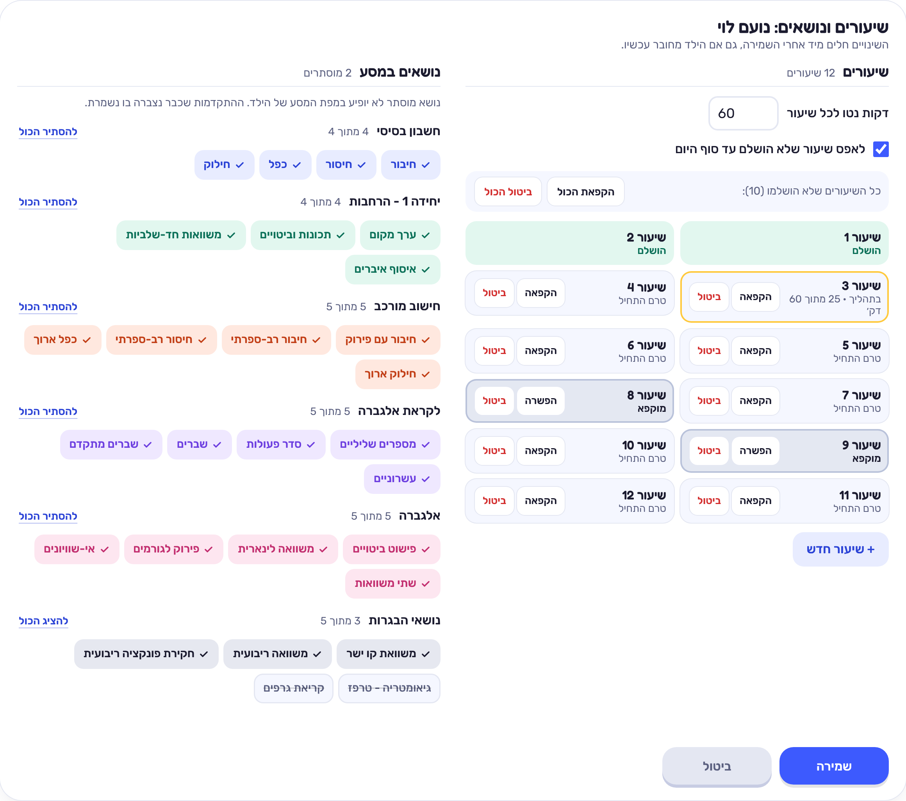
4מטבעות ובדיקת רמה
לחיצה על תווית המטבעות בכרטיס פותחת כפתורים מהירים: +5, +10, +25 או +50.
בדשבורד המלא אפשר לבקש בדיקת רמה בכניסה הבאה, לקבוע שהיא חובה, להשהות אותה או לבטל אותה.
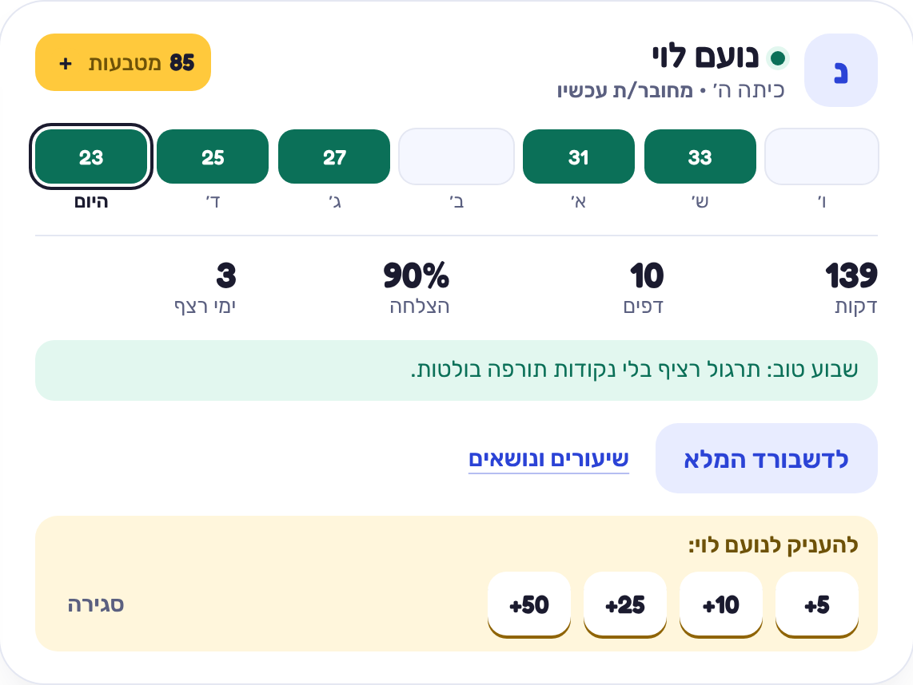
מדריך למורה
כל התלמידים שמשויכים אליכם, במסך אחד.
1הכיתה שלי
- מדדים: כמה תרגלו, דקות, תרגילים, הצלחה ומי צריך תשומת לב. בוחרים טווח: השבוע, החודש או הכול.
- טבלת התלמידים: לחיצה על שורה פותחת את הדשבורד המלא של התלמיד.
- "שיעורים ונושאים": אותו עורך שיש להורה, לכל תלמיד בנפרד.
- הצלחה לפי מסלול: הנושאים שהכיתה מתקשה בהם, מהחלש לחזק.
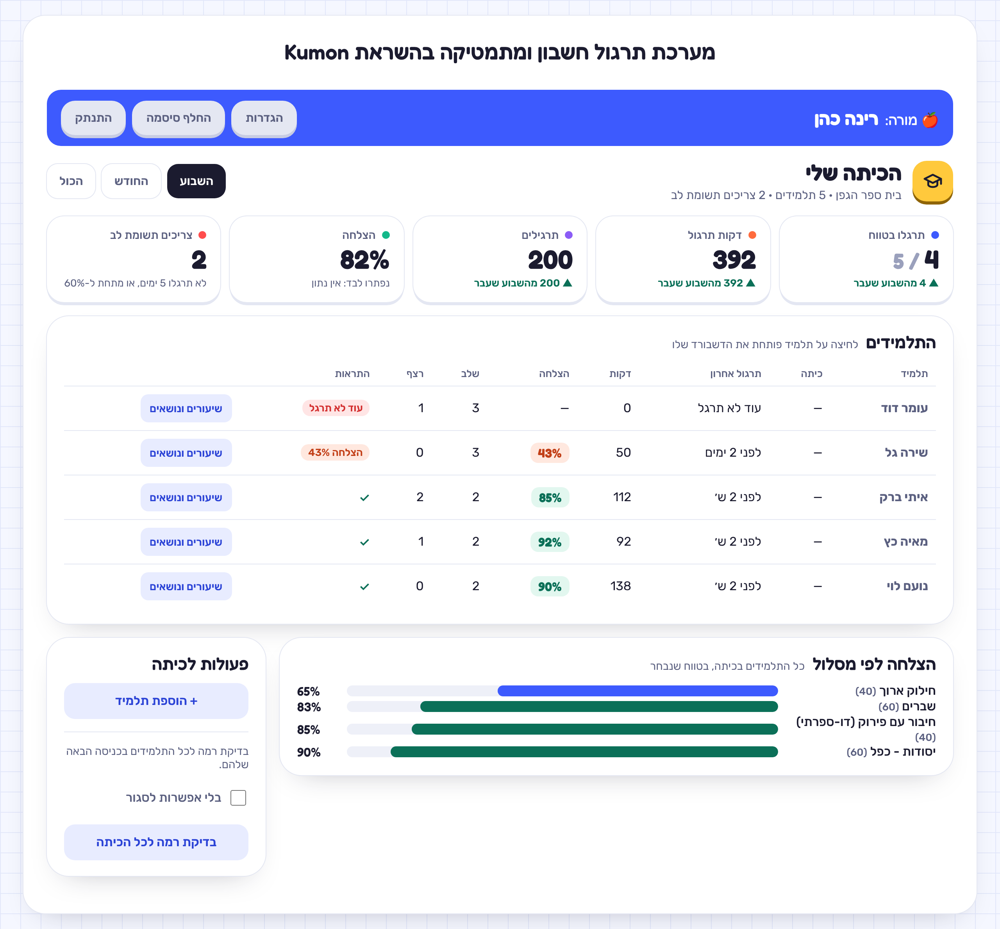
2פעולות לכיתה
- "+ הוספת תלמיד": שם, שם משתמש, סיסמה זמנית, ולא חובה שם המשתמש של ההורה כדי לקשר אותו.
- "בדיקת רמה לכל הכיתה": מופיעה לכל תלמיד בכניסה הבאה. "בלי אפשרות לסגור" הופך אותה לחובה.
- "הגדרות": שם מלא ושם בית הספר. לפי בית הספר הורים מוצאים אתכם ברשימת המורים.
תלמיד שהורה יצר ובחר בכם כמורה מופיע בכיתה מיד, בלי פעולה מצדכם.
שאלות נפוצות
| מה קרה | מה עושים |
|---|---|
| נותקתי עם "התחברת ממכשיר אחר" | מישהו התחבר לאותו חשבון במכשיר אחר. מתחברים שוב, ואם זה לא אתם, מחליפים סיסמה. |
| שכחתי סיסמה | פונים למנהל המערכת. |
| כרטיס השיעורים נעלם אצל התלמיד | כל השיעורים שנשארו מוקפאים או מבוטלים. מפשירים או משחזרים ב"שיעורים ונושאים". |
| נושא נעלם מהמסע | ההורה או המורה הסתירו אותו. ההתקדמות נשמרת וחוזרת כשמציגים אותו שוב. |
| שעון השיעור עומד | אחרי דקה בלי פעילות, או כשעוברים ללשונית אחרת, השעון נעצר. ממשיכים לפתור והוא ממשיך. |
| בדיקת הרמה קופצת בכל כניסה | ההורה או המורה יכולים להשהות או לבטל אותה בדשבורד של התלמיד. |
| המורה לא ברשימה בטופס הוספת ילד | המורה עוד לא נכנס למערכת או שלא הגדיר בית ספר. אפשר ליצור את החשבון בלי מורה ולשייך אחר כך. |
חזרה לאפליקציה · התמונות במדריך מבוססות על נתוני דוגמה